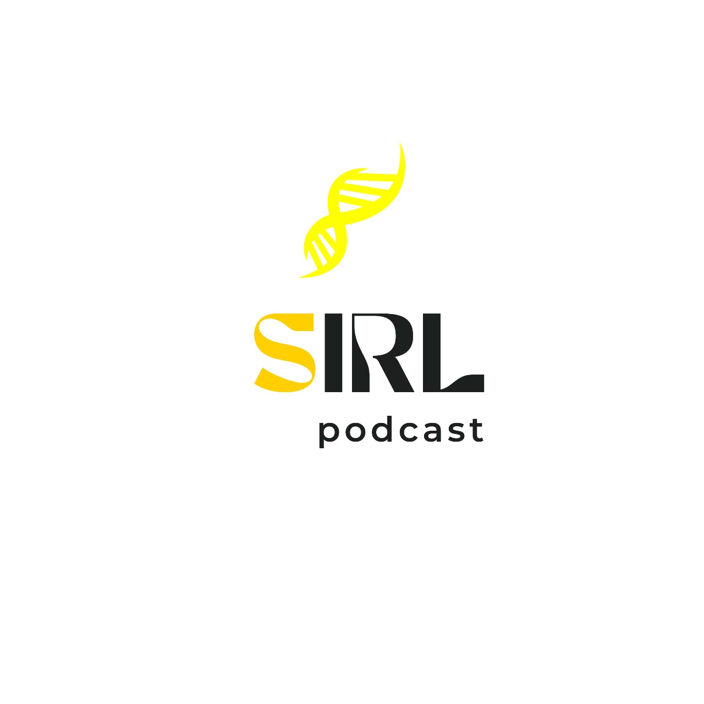
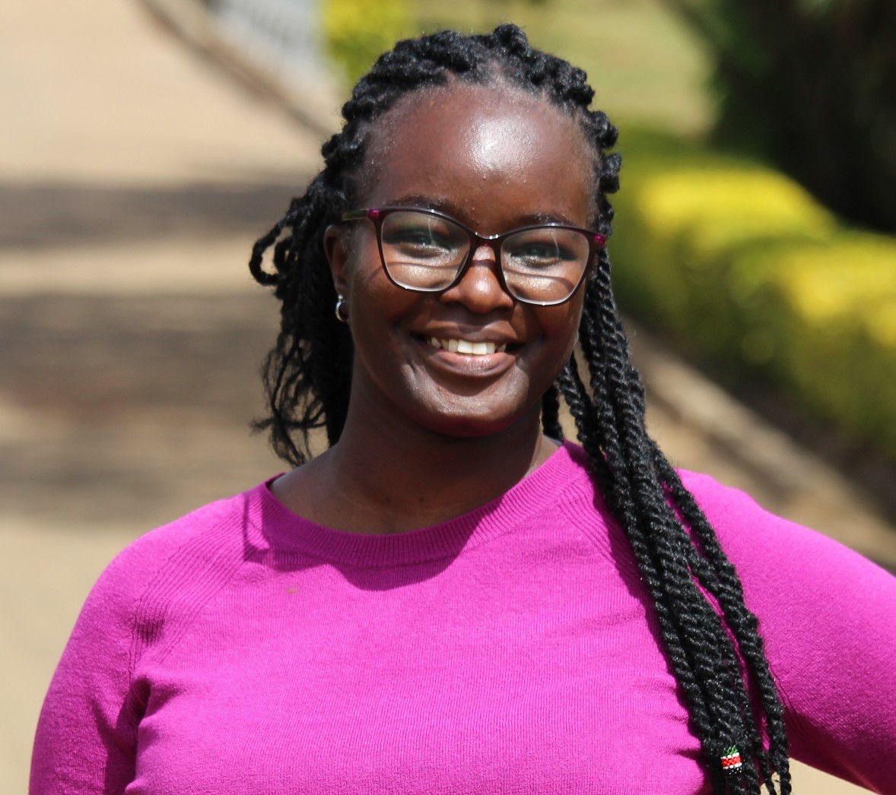
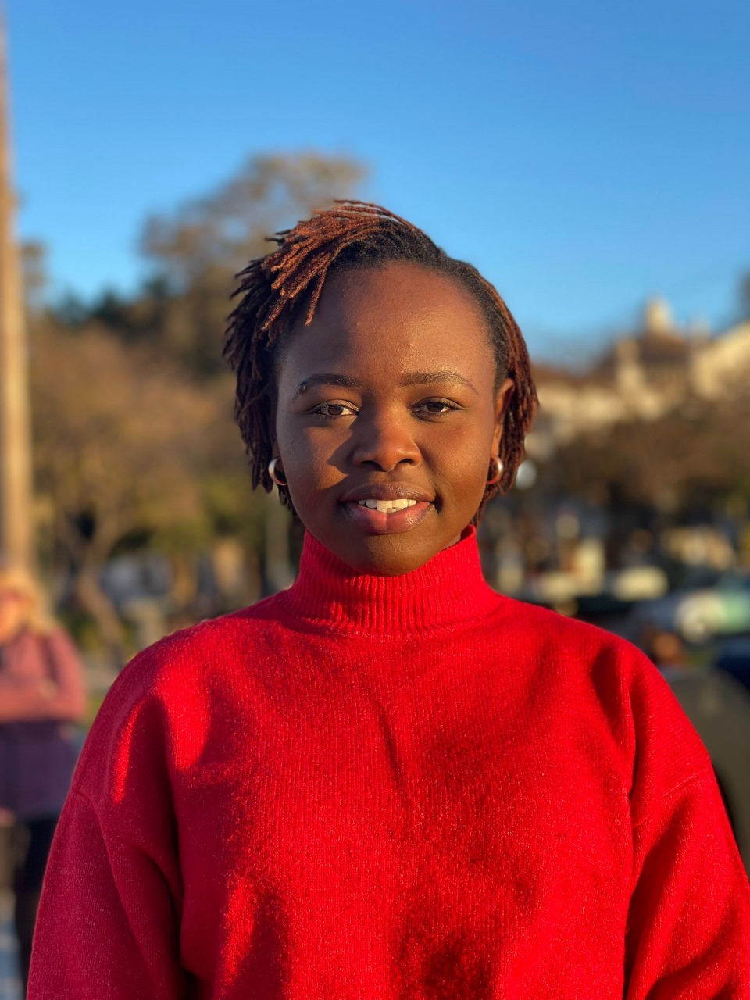

The Science in Real Life Podcast
with Nyasita Ondari & Sharon Otieno

The Science in Real Life podcast (SIRL) is more than just a podcast; it's a community of curious minds, STEM enthusiasts, and lifelong learners.
Dive into the world of science, technology, engineering, and math (STEM) careers
At SIRL we bring you exclusive interviews with individuals and experts in STEM to hear their firsthand accounts of their journey through a STEM career. From the struggles to the successes, we explore what it means to be a "STEMer", while uncovering insights and advice on how to thrive in these ever-evolving industries.
Our mission is to inspire and inform the next generation of STEM leaders while providing valuable insights for those already established in their careers.
We hope you enjoy the episodes. This is the Science in Real Life!
SiRL TEAM
Meet OUR TEAM
Meet the dynamic duo who are the powerhouse of The Science In Real Life podcast! They bring charm, wit, and a touch of humor behind the mics.

{kind=link}
Nyasita Ondari
Founder & Host
Laurah is a bioinformatician, curator and creator. She loves community driven initiatives. Outside school and work she enjoys reading, history, going on adventures and discovering new music.

{kind=link}
Sharon Otieno
Co-host
Sharon is a science enthusiast and an erasmus Mundus joint masters Scholar under the Chemical Innovation and regulation program. Outside school and work she enjoys mentoring, discovering gems in travel destinations, cooking and shopping.
Apply for Podcast
The Science In Real Life (SIRL) Podcast serves as a beacon of inspiration for people aspiring to and people in STEM. Your experiences can motivate, educate, and spark curiosity. We're looking for passionate STEMers who are eager to share their stories and are ideally doing their postgrad (masters, PhD, post doc etc)
Subscribe to our Newsletter
We know you are juggling a lot and may not have time to check if there are new episodes or news about the pod. Allow us to nudge you politely in your inbox. We promise we will not spam you or be annoying :)
Get in touch
Suggest a Topic for SiRL
Copyright © SiRL 2024. All rights reserved. Designed & Developed by: Byrooo